Dasar Otomotif
Jenis kendaraan, prinsip kerja, keselamatan kerja, dan pengenalan sistem mobil.

PUSAT BELAJAR OTOMOTIF MOBIL
Belajar sistem kendaraan, memahami komponen, menghitung spesifikasi, dan berlatih diagnosis kerusakan dalam satu tempat.
JELAJAHI AB GARAGE
Mulailah dari fungsi komponen, pahami cara kerjanya, lalu lanjutkan ke pengukuran dan diagnosis. Selalu utamakan keselamatan saat praktik.
PERPUSTAKAAN TEKNIK
Pilih topik di bawah ini untuk masuk ke halaman modul pembelajaran lengkap.
JALUR BELAJAR
Pilih tingkat belajar untuk memfilter daftar materi sesuai level Anda.
Mulai dari dasar otomotif, fungsi komponen, dan keselamatan kerja.
Jenis kendaraan, prinsip kerja, keselamatan kerja, dan pengenalan sistem mobil.
Komponen utama, langkah kerja 4-tak, pelumasan, pendinginan, dan kompresi.
Kopling, transmisi, poros propeller, diferensial, dan poros penggerak.
Aki, starter, alternator, sekring, relay, sensor, dan dasar membaca diagram.
Aliran udara dan bahan bakar, injektor, throttle body, serta sensor EFI.
Kunci, torque wrench, multimeter, jangka sorong, dan mikrometer.
Prinsip kerja sistem pengereman, steering, roda, dan suspensi.
Keluhan pelanggan, inspeksi awal, pengukuran, dan penentuan penyebab.
MODUL PEMBELAJARAN
ALAT BANTU PERHITUNGAN
Masukkan nilai untuk menghitung hasil secara otomatis.
Menghitung volume satu silinder dan total kapasitas mesin.
Rumus: π ÷ 4 × bore² × stroke × jumlah silinder
Menghitung rasio dari volume langkah dan volume ruang bakar.
Untuk servis nyata, gunakan spesifikasi pabrikan.
Konversi tekanan bar ke kilopascal dan psi.
LATIHAN INTERAKTIF
Pilih gejala kendaraan, tentukan pemeriksaan awal, lalu lihat pembahasannya.
Pengemudi memutar kunci ke posisi START, tetapi mesin tidak berputar. Lampu indikator dashboard terlihat redup.
Periksa sumber daya listrik sebelum membongkar komponen lain.
PRAKTIK VIRTUAL
Aktifkan komponen untuk memahami alur daya listrik. Ini adalah model pembelajaran sederhana, bukan diagram servis untuk kendaraan tertentu.